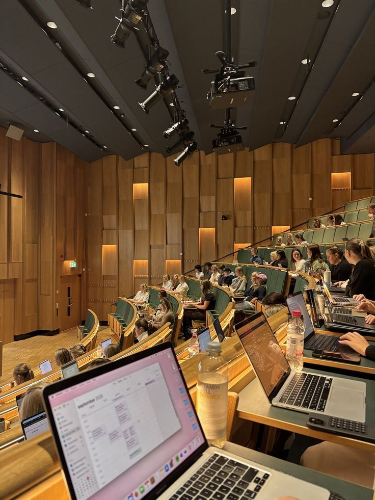

Ici commence votre avenir
Ici commence votre avenir


parcours pluridisciplinaire dans le systeme LMD
| Spécialité informatique | Spécialité télécommunication | Spécialité Multimédia |
|---|---|---|
| Base de données | Radiocom | Infographie |
| Génie logiciel | Réseau et télécom | Prise de vue |
| Cyber sécurité | Electro et sys. embarqués | Prise de son |
La spécialisation en derniére année est proposée par 3 options : E-marketing et économie numérique,
Management d'l’Innovation et gestion de projets et Tchnico-commercial.
Doctorat a l'internationale : cotuelle avec les universites partenaires(USA,EUROPE,AFRIQUE)